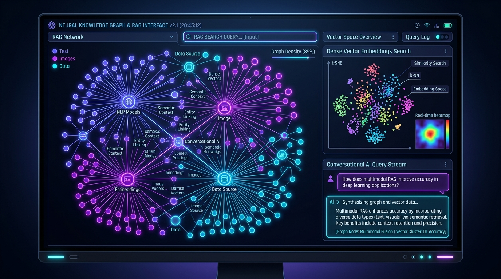

Flagship GenAI • Live on VercelCoursera Multimodal Intelligence Platform
Enterprise learning analytics & grounded RAG platform. Ingests video transcripts (SRT) and readings into 384-dimensional dense vector embeddings in PostgreSQL pgvector with Gemini 2.5 Flash anti-hallucination guardrails.